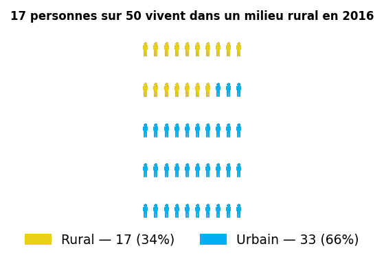
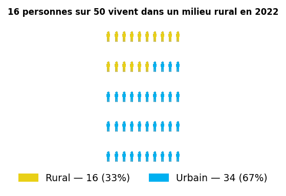
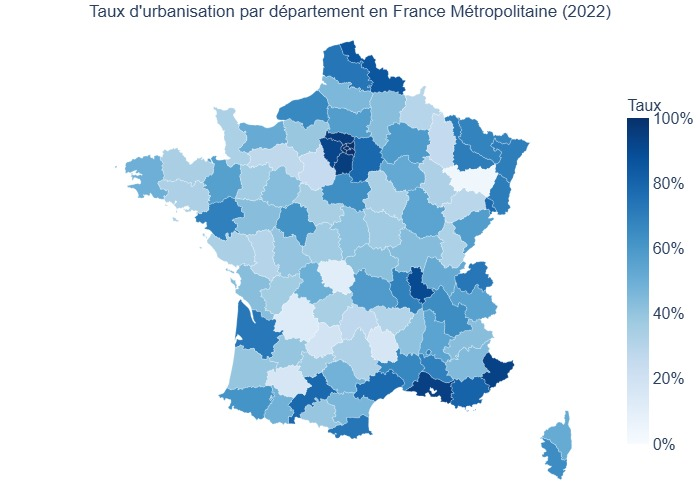

La croissance démographique de 2016 à 2022 reste concentrée dans les pôles urbains, malgré l'attractivité migratoire du milieu rural
* Données analysées hors France non métropolitaine
L’évolution du solde
naturel
(2016-2022)
x5,77
5,77 fois plus de naissance en urbain qu'en rural
L’évolution du solde
migratoire
(2016-2022)
x1,40
1,40 fois plus de migration en rural qu'en urbain
L’évolution de la
population
(2016-2022)
x4,27
4,27 fois plus d’habitants en urbain qu'en rural
(1).png)
En 2016, 34%
de la population vit en milieu rural

En 2022, 33%
de la population vit en milieu rural

